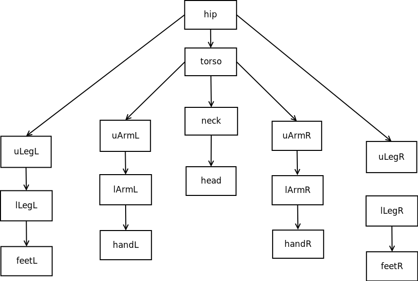
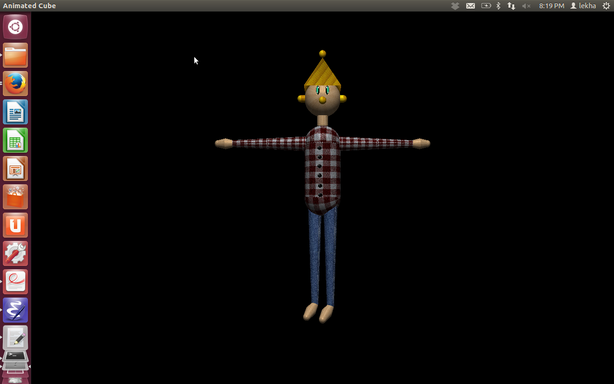
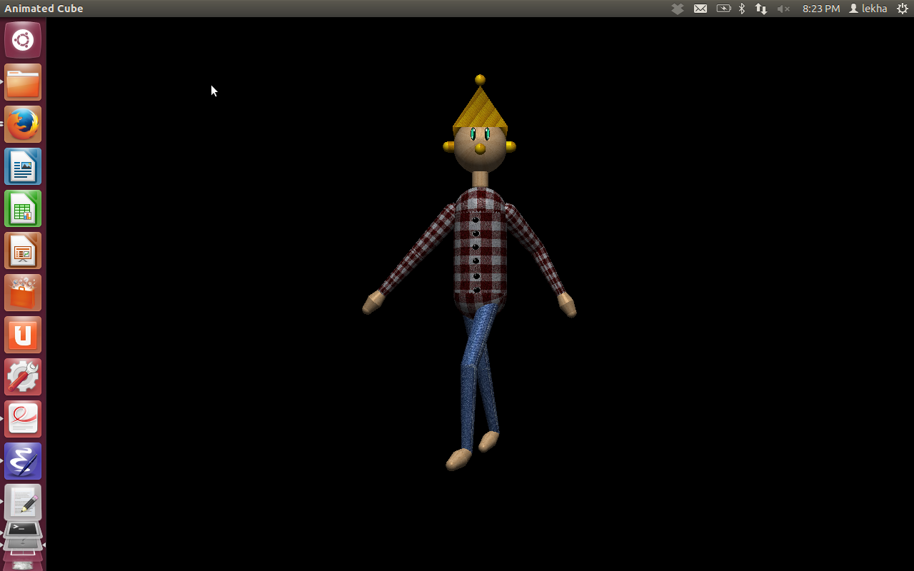
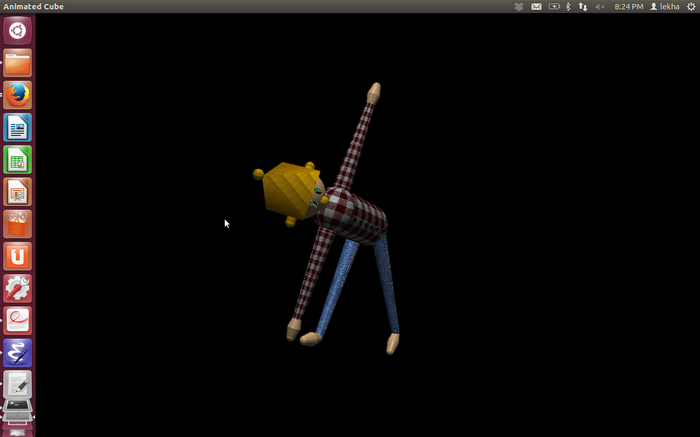
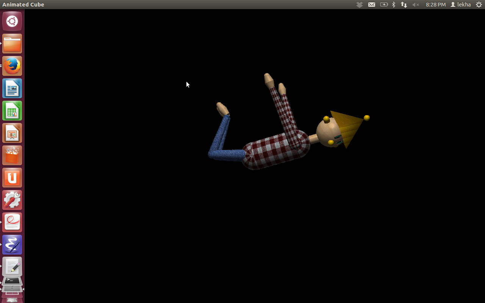
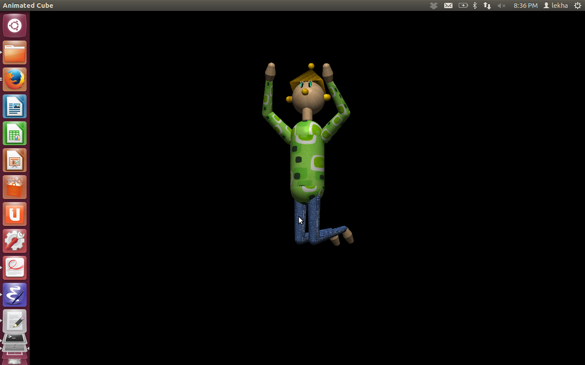

Music Box
CS 675 Computer Graphics - Assignment 2 Part 1
Keyboard Shortcuts:
Modes:
- I ---Initial Position for all parts
- | ---Human
- [ ---Box
- s ---Scene
- t ---Torso
- n ---Neck
- h ---Head
- q ---Left Upper Arm
- w ---Left Lower Arm
- e ---Left Hand
- p ---Right Upper Arm
- o ---Right Lower Arm
- i ---Right Hand
- z ---Left Upper Leg
- c ---Left Lower Leg
- a ---Left Foot
- m ---Right Upper Leg
- b ---Right Lower Leg
- l ---Right Foot
*Legs and arms shortcut are related to keyboard layout of alphabets.
Rotation Controls:
- 0 ---Initial position for selected part
- 1,2 ---X axis
- 3,4 ---Y axis
- 5,6 ---Z axis
- 7,8 ---Open/close box
Modelling Hierarchy:

Acknowledgements:
- http://www.videotutorialsrock.com/opengl_tutorial/textures/home.php for ImageLoader.cpp code for texture mapping
- Sample codes for shading
- http://nehe.gamedev.net/tutorial tutorials for explanation of various openGL commands





Last modified: Fri Oct 11 19:43:23 IST 2013